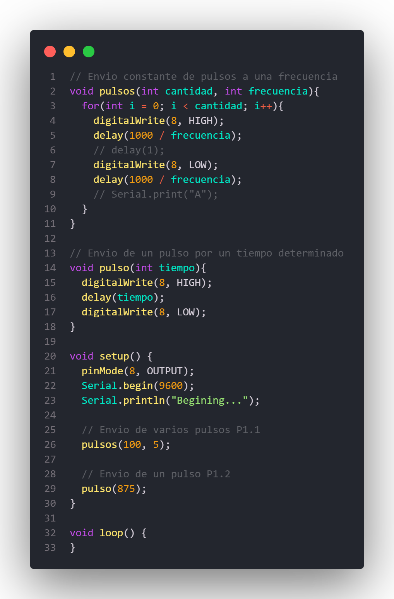
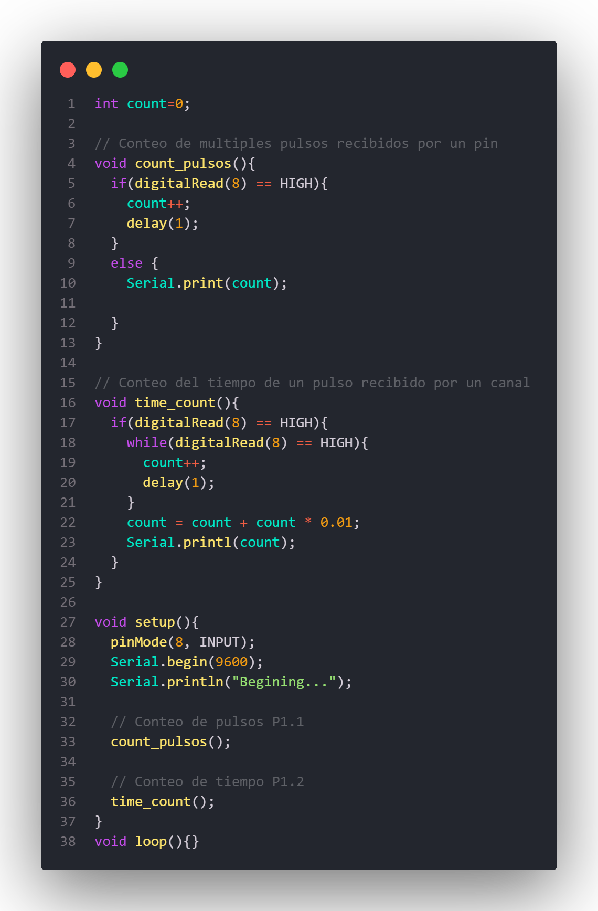
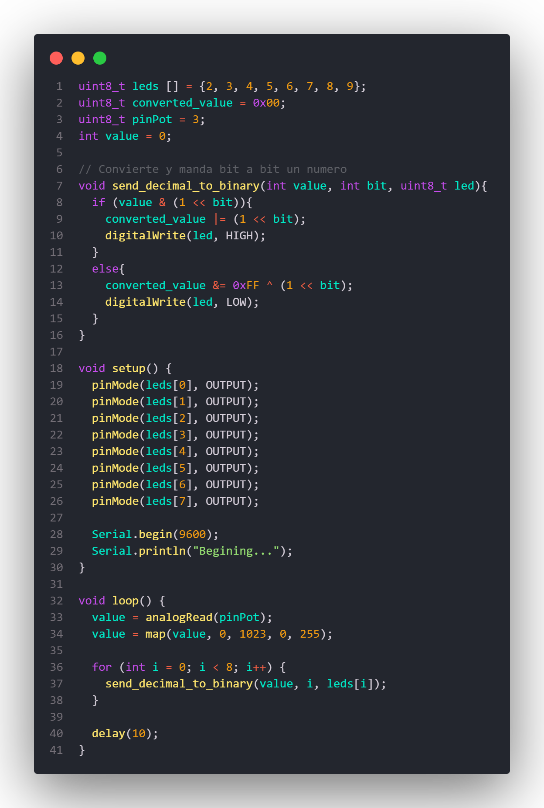
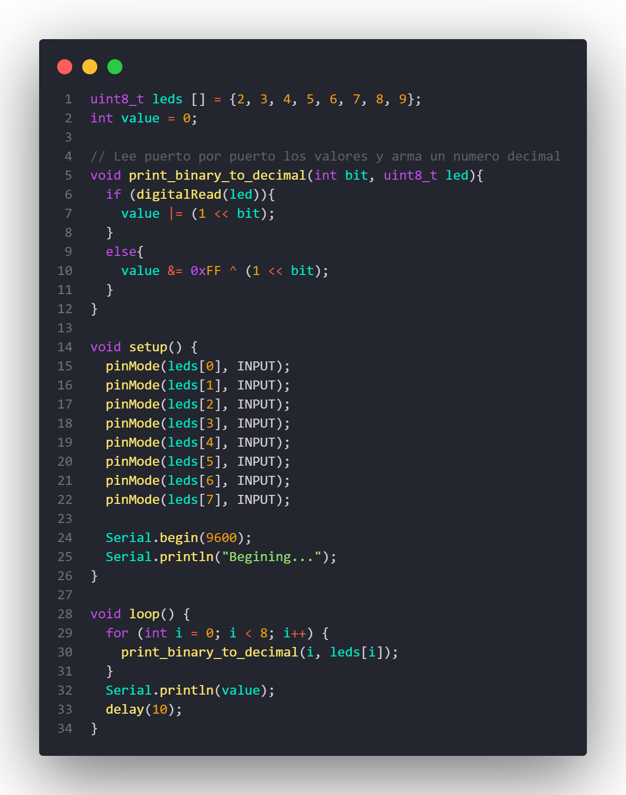
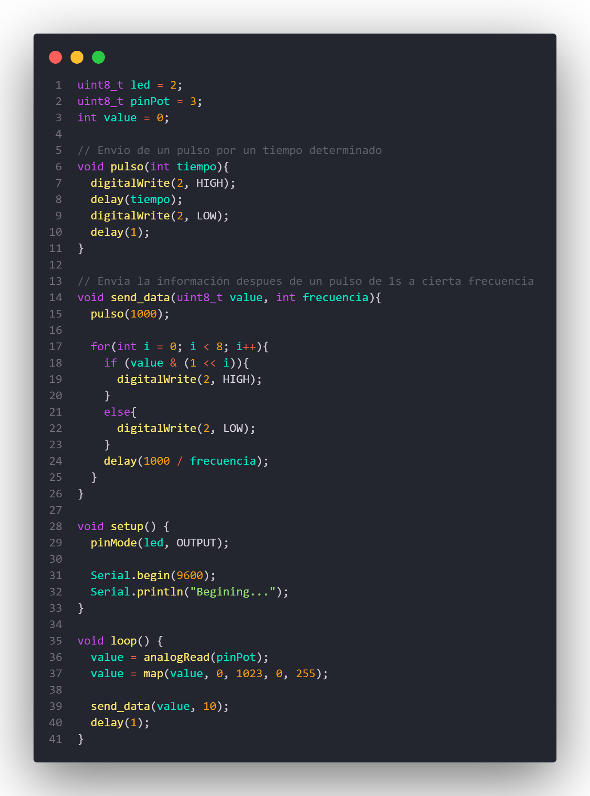
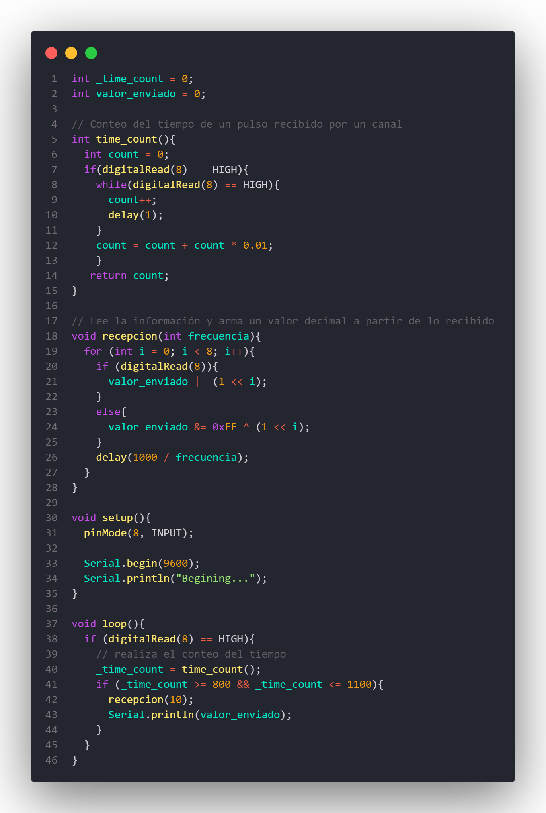
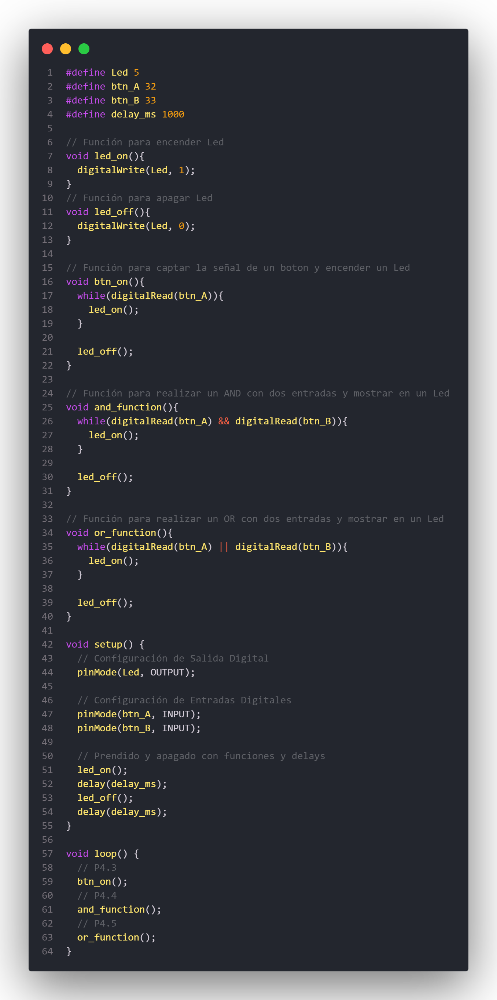

Práctica 1: Protocolo de Comunicación: Contador de pulsos y contador de tiempo
Objetivo General
Conocer, identificar y comprobar el funcionamiento al desarrollar un protocolo de comunicación, en esta primera parte de un contador de pulsos y un contador de tiempo en un pulso.
Objetivos Específicos
Contador de Pulsos
Utilizando 1 Arduino, diseñar una función que permita enviar un número determinado de pulsos (Variación de 0 a 1) a una frecuencia específica, la función debe tener la siguiente estructura void pulsos(int cantidad, int duración). (Comprobar el correcto funcionamiento utilizando el osciloscopio). Utilizando un segundo Arduino, diseñar una función que permita contar el número de pulsos que ha recibido (Variación de 0 a 1) y mostrarlos en el monitor serial Utilizando ambos arduinos, conectar un pin de los Arduinos para comprobar el funcionamiento del sistema enviando un numero de pulsos específicos a la velocidad de 1 pulso por segundo,10, 100 y 1000 pulsos por segundo.
Contador de duración de pulsos
Utilizando 1 Arduino, diseñar una función que permita enviar un pulso con un tiempo en High determinado (Comprobar el correcto funcionamiento utilizando el osciloscopio) Utilizando un segundo Arduino, diseñar una función que permita contar el tiempo de la duración de un pulso que ha recibido del primer Arduino (Variación de 0 a 1) y mostrarlos en el monitor serial.
Práctica 2: Protocolo de Comunicación: Convertidor a binario
Objetivo General
Conocer, identificar y comprobar el funcionamiento al desarrollar un protocolo de comunicación, en esta tercera parte de un convertidor a binario.
Objetivos Específicos
Utilizando 1 Arduino, diseñar un sistema que permita convertir el valor analógico de un potenciómetro en un arreglo de variables que representen el numero en binario de 8 bits, de tal forma que podamos ver cada uno de los valores como salidas digitales en los pines del Arduino. Utilizando un segundo Arduino, diseñar una función que permita convertir el valor en binario obtenido de 8 puertos digitales del Arduino en un valor entero en sistema decimal y mostrarlos en el monitor serial. Utilizar el primer Arduino para generar los valores digitales en binario y el segundo Arduino utilizarlo para decodificarlos y convertirlos en un valor decimal
Práctica 3: Protocolo de Comunicación Asíncrono
Objetivo General
Conocer, identificar y comprobar el funcionamiento al desarrollar un protocolo de comunicación asíncrono.
Objetivos Específicos
Utilizando 1 Arduino, diseñar un sistema que permita convertir el valor analógico de un potenciómetro en un arreglo de variables que representen el numero en binario de 8 bits, y los deposite en un arreglo [ ], Finalmente elaborar un código de programación que permita enviar los bits del arreglo en orden y en serie siguiendo las siguientes características: - Iniciar el envió de los datos siempre con una señal HIGH (En total se enviarán 9 datos, el primer bit en HIGH y posteriormente los 8 bits de información). - Enviar los datos con una duración del pulso predeterminada, ejemplo 1000 ms - Enviar siempre la misma cantidad de bits. Utilizando un segundo Arduino, diseñar una función que permita adquirir el valor en bits de la señal de comunicación del Arduino anterior, la procese y la convierte en un dato decimal que finalmente enviara al monitor serial.
Práctica 4: Wifi ESP8266 Entradas y Salidas Digitales
Objetivo General
Conocer, identificar y comprobar el funcionamiento de las entradas y salidas digitales en el módulo NodeMCU ESP8266 o ESP32.
Objetivos Específicos
Utilizando la información e instrucciones de la presentación, configurar el IDE de Arduino para poder programar el NodeMCU directamente desde el entorno de Arduino, instalando las herramientas necesarias. Revisar el pinout y los GPIO disponibles para el uso del NodeMCU seleccionado. Desarrollar un programa de encendido de un LED mediante programación. Desarrollar un programa de apagado de un LED mediante programación. Desarrollar un programa de encendido y apagado de un LED mediante retardos. Desarrollar un sistema de encendido y apagado de un LED mediante el uso de botones. Desarrollar un sistema de encendido y apagado de un LED mediante el uso de dos botones y una condicional AND. Desarrollar un sistema de encendido y apagado de un LED mediante el uso de dos botones y una condicional OR.
Práctica 5: Cables de Red
Objetivo General
Conocer, identificar y comprobar el funcionamiento de los cables de red estructurado.
Objetivos Específicos
Investigar la configuración de los cables de red estructurados: Directo y Cruzado Investigar y explicar la forma de probar un cable de red directo y uno cruzado. Armar 2 cables de red directos y probarlos. Armar 2 cables de red cruzados y probarlos.
Práctica 6: Configuración de servidor para Red Local
Objetivo General
Conocer, investigar e identificar los pasos para configurar una red local y el acceso a recursos de un equipo en red.
Objetivos Específicos
En tu computadora instala XAMPP para configurar un servidor local, habilita los servicios de Apache y monta un sitio web: https://www.apachefriends.org/es/index.html Habilita el acceso al puerto 80 desde el firewall del equipo configurado como el servidor local. Conéctate a una red de internet (IBERO o red personal con tu celular), Identifica la Ip de asignada al equipo servidor. Comprueba el acceso al sitio web montado en el servidor local desde 3 dispositivos distintos (para acceder es necesario estar en la misma red y colocar en el explorador en url la dirección IP del servidor).
Práctica 7: Redes de computadora con Switches y Cables
Objetivo General
Conocer, identificar y comprobar el funcionamiento de una red de área local utilizando switches y Router.
Objetivos Específicos
Identificar y caracterizar el funcionamiento del switch y el router. Elaborar una red, utilizando la asignación automática de IP, seleccionado el tipo de cable adecuado y un switch conectando mínimo 3 computadoras y una con servicios de servidor. (Comprueba que es posible encontrar dispositivos en la red, puedes usar el comando PING, y comprueba el acceso a la página web del servidor) Elaborar una red, utilizando la asignación automática de IP, seleccionado el tipo de cable adecuado y un router conectando mínimo 3 computadoras (alámbrica o inalámbricamente) y una con servicios de servidor. (Comprueba que es posible encontrar dispositivos en la red, puedes usar el comando PING, y comprueba el acceso a la página web del servidor) Une ambas Redes, utilizando la asignación automática de IP, seleccionado el tipo de cable adecuado y comprueba el intercambio de archivos.